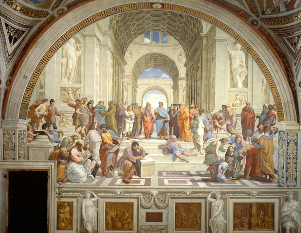

The School of Athens
By Raphael
The School of Athens, considered by many to be Raphael's masterwork, is a fresco representing the greatest minds of classical antiquity, gathered together to share their thoughts and beliefs. The fresco was painted between 1509 and 1511 as a part of a commission to decorate the rooms of the Stanze di Raffaello in the Apostolic Palace in the Vatican.
The two center figures, Aristotle and Plato, are key philosophers in the development of Western thought. Plato, with his belief in a higher realty, points skyward. Within his hands, Plato holds the Timaeus — one of Plato's famous dialogs on the nature of reality and time. In contrast, Aristotle points downward, indicating that he is grounded in a reality that can be experienced by sight and touch. In his hands, he holds his book Ethics, a tome that emphasizes the need for justice, friendship, and ethical government.
Other famous philosophers fill the pseudo-architecture. In many cases, when Raphael did not have classical images to draw upon, he used images of contemporary figures to stand in for their classical counterparts. Look for a portrait of Michelangelo on the left-forward steps, his thoughts concerned with sketching and art.